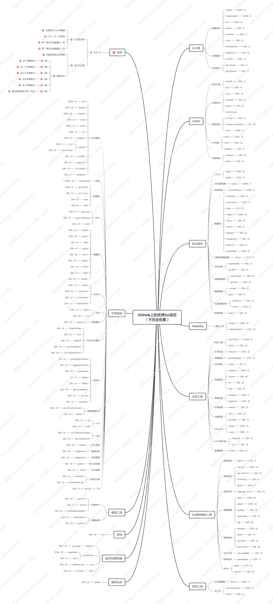

本文主要记录一些Golang相关的资源链接和书籍, 参考 huweihuang
1. 官方文档
1.1. 官网
1.2. 基础
1.3. 补充
1.4. The Go Blog
- Share Memory by Communicating
- Defer, Panic, and Recover
- Go Slices: usage and internals
- Profiling Go Programs
2. 书籍
《Mastering Go》
《Go语言实战》
3. GitHub上优秀的Go项目
